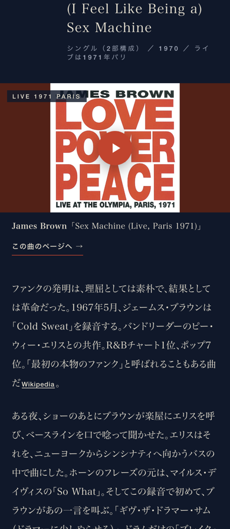
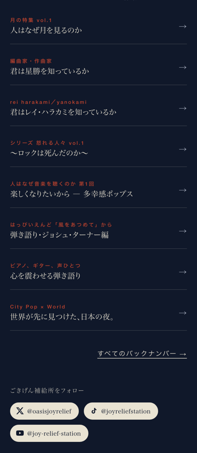

共有資料の一覧 ／ 確認ページ #122704 踊るの特集 vol.1「人が踊るとき」を燃え殻風に書き直して、確定型（怒れる人々 vol.1 と同じ形）で本番へ
#122704 踊るの特集 vol.1「人が踊るとき」を燃え殻風に書き直して、確定型（怒れる人々 vol.1 と同じ形）で本番へ
2026-10-18 実装・main合流・本番(GitHub Pages)反映まで実測確認
Gensparkの叩き（11曲）の章立てと動画は残し、本文を燃え殻風の語り（生活の一コマ・情けない僕・クスッと笑える裏話）で全部書き直した。章頭は型どおり（小さな一言→アーティスト - 曲名→年→「この曲のページへ →」）。吹き出しは7（11章の3分の2以内。笑い4・出典つき裏ネタ3）。写真は Wikimedia Commons の自由ライセンス6枚（撮影者・ライセンス・元ページ付き）。5言語（英・中・西・韓）。事実は Wikipedia 本文・HISTORY・徳島県・THE AWAODORI で確かめ、確かめられなかった数字（第30回・収容3,000人・お立ち台3m・9,000年前）は落とした。関所の実測：見た目の統一 LOOK_RESULT: PASS／物語 MONOGATARI_RESULT: PASS／後退（送る量）KOUTAI_KANMON_RESULT: PASS（89,314バイト ≦ 基準86,427＋5%＝90,748）。到達点は status/zenkai_1018yu/122704/todatsu.md。
② 数字
11曲ぜんぶページ内で聴ける
9本曲ページへの導線（James Brown・Donna Summer・Black Box・Technotronic・Candy Dulfer・AWB・Meshell）
6枚自由ライセンスの写真（Commons）
7吹き出し（笑い4・裏ネタ3＝11章の64%）
5言語日・英・中・西・韓
89,314Bページの重さ（基準90,748以内・実測）
画面（headless・無音で撮影）
スマホ・第6章（James Brown）
スマホ・終わり（締め→シェア→出典→ほかの特集）
④ 押せるリンク
⑤ 何をどう確かめたか
| 確認項目 | 結果 |
|---|
| 本文を燃え殻風に書き直し（11章＋つかみ＋締め） | 全章 |
| 章頭の型（小さな一言・アーティスト - 曲名・年・曲ページ導線） | 型どおり |
| 事実の裏取り（出典は本文のリンクと末尾の出典欄） | 30出典 |
| 関所：unify_look / monogatari / koutai（送る量） | 3つとも PASS（実測は上の①に記載） |
| 曲ページ（The Twist・美しき青きドナウ・Cold Sweat） | 主の動画が公式チャンネルでなく、曲ページの関所（本人の証拠）を通らないため未作成。次の便で仕入れとして作る |
| Lovable の公開 | 鍵が切れていて押せず（Dispatch が押す） |